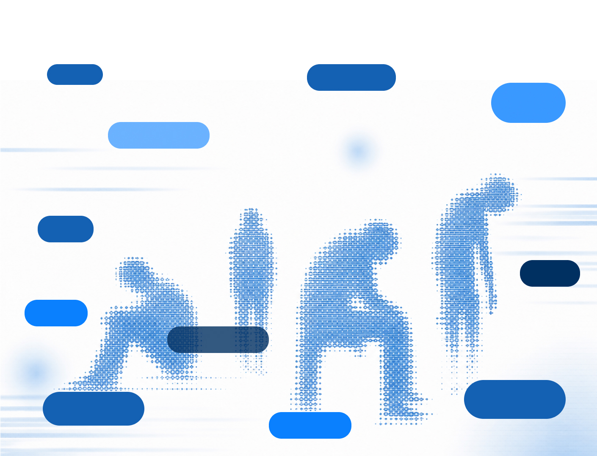
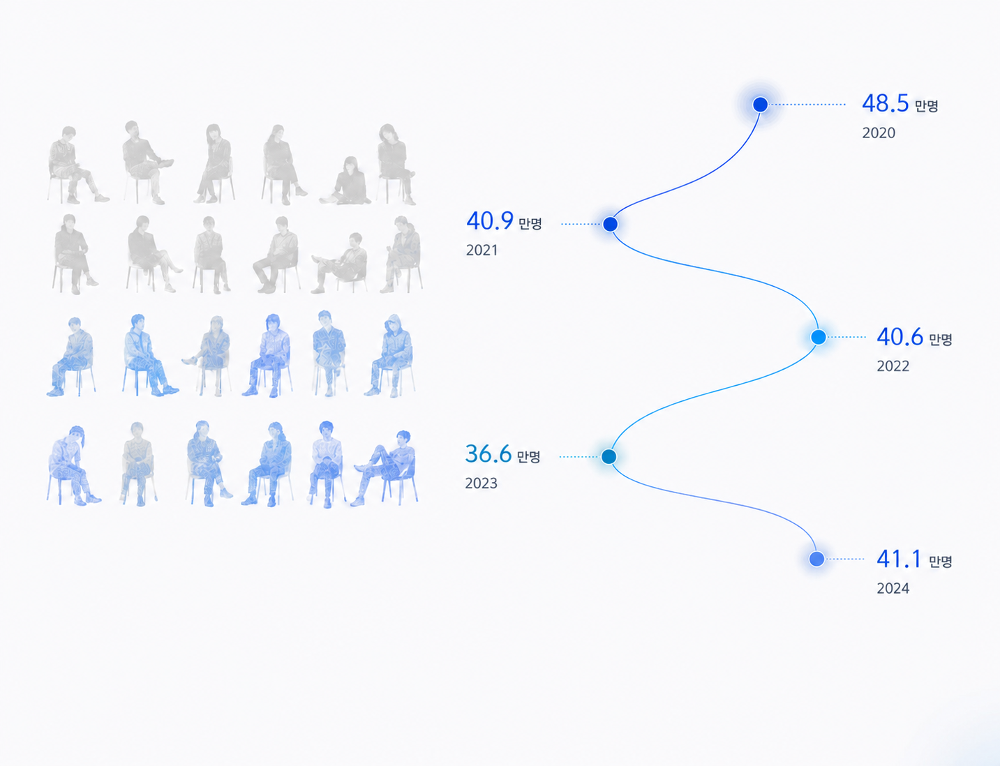
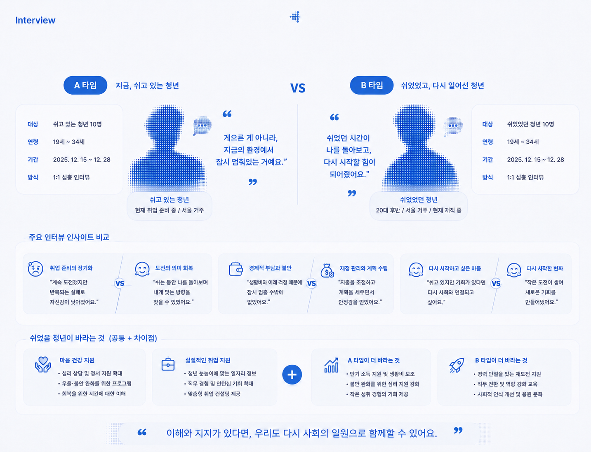

쉬었음 청년은 취업 준비나 경제 활동 없이 쉬고 있다고 응답한 청년들을 의미한다. 단순한 게으름이 아니라 반복된 취업 실패, 번아웃, 경제적 부담, 심리적 불안 등 다양한 이유로 잠시 멈춰 있는 상태를 말하며, 최근 중요한 사회 문제로 주목받고 있다.
원하는 일자리 없이 쉰 청년이 10명 중 3명에 달하며, 특별한 사유 없이 취업 및 구직 활동을 하지 않는 ‘쉬었음’ 인구가 통계 작성 이후 최대치를 기록하였다.
왜 청년들은 쉬는 걸 선택했을까? 게으른 걸까, 구조의 문제인 걸까?


청년 10명 중 4명은 쉬었음 청년에 해당
쉬었음 청년은 줄었다가 다시 늘고 있습니다.
이 흐름은 우리 사회의 변화를 보여줍니다.

설문조사와 심층 인터뷰를 통해 '쉬고 있는 청년'과 '쉬었었던 청년'의 경험과 생각을 살폈습니다.